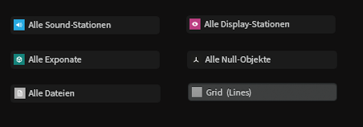
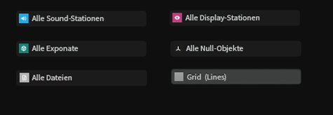

WHAT IS MYLES?
—
Software-Lösung
zur Planung, Steuerung
und Analyse digitaler Ausstellungen.
MYLES.SYSTEMS – TOOLKIT
—
Digitale-Lösungen für analoge Räume.
Software-Lösung für digitale Ausstellungen, Museen, Galerien, Messen und Veranstaltungen.
Mit dem myles.systems-Toolkit erhalten Raum- und Ausstellungsdesigner, Kuratoren, Messebauer und Eventagenturen ein modulares Software-Toolkit zur Planung, Steuerung und Analyse digitaler Ausstellungen im physischen Raum. Myles.systems bietet Ihnen eine Plattform, mit der Sie digitale Ausstellungen – ohne eigene Programmierkentnisse – realisieren können.
Planung - Digitale Ausstellungen planen und erstellen
Um digitale Ausstellungen planen und betreiben zu können,
müssen alle Beteiligten optimal zusammen arbeiten.
Um das so effektiv wie möglich zu gestalten erarbeiten Sie bei myles.systems
gemeinsam oder allein eine Karte Ihres Projekts. Auf dieser Karte platzieren Sie
alle Objekte wie z.B. Exponate, Möbel, Hörstationen, Displays, Projektionen usw..
Mit Hilfe der Karte kommunizieren Sie Ihre Ideen/Entwürfe maßstabsgerecht mit anderen Abteilungen.

Steuerung - Prozesse und Stationen im Raum steuern und verwalten
Für die Steuerung digitaler Objekte im Raum erhalten Sie den myles-Client-Contoller.
Sobald der myles-Client-Contoller auf einem Ihrer Endgeräte ( z.B. PC, Arduino, Mac etc.) installiert ist,
können Sie das Gerät bequem über Ihre Karte ansteuern und fernwarten.
Dazu gehören Grundfunktionen wie Ein- und Ausschalten, zeitgesteuerte Kommandos
(z.B. automatisiertes Ausschalten und Hochfahren) und platzieren von multimedialen
Inhalten auf Ihrem Endgerät. Sie steuern Ihre Ausstellungs-Geräte bequem via
Tablet oder Computer vor Ort oder aus der Ferne.
Analyse - Digitale Ausstellungen auswerten und verbessern
Mit dem myles-Analyse-Modul erhalten digitale Ausstellungen
eine Echtzeit-Lösung zur Analyse von Räumen und Interaktionen darin.
Myles.systems hilft Ihnen Ihre digitale Ausstellung zu verstehen und
aus erhobenen Daten lernen zu können. Das myles.system-Analytic-Modul
ist Ihre digitale Grundlage, um digitale Ausstellungen und Räume
auf die Bedürnisse der Besucher anpassen zu können.

Planung und Visualisierung
Planen und Visualisieren Sie Ihre digitalen Räume mit allen Objekte und Inhalte, egal ob digital
oder analog. Arbeiten Sie gemeinsam an einem Projekt und kommunizieren Sie Ihre Vision maßstabsgerecht anhand einer Karte mit anderen Abteilungen.
Steuerung und Kontrolle
Erhalten Sie volle Kontrolle über multimedialen Stationen in Ihrer digitalen Ausstellung.
Schalten Sie Stationen aus der Ferne oder direkt vor Ort – bequem via Tablet o. PC – an und aus. Sparen Sie Strom und Arbeitszeit mit automatisierten Zeit-Befehlen.
Verwaltung und Überblick
Verlieren Sie niemals den Überblick über Ihr Projekt. Verwalten Sie alle Objekte ortsbezogen – von der Statue bis zum letzten Kabel.
Aktualisieren Sie digitale Inhalte bequem mit myles.systems aus der Ferne oder direkt vor Ort.
Analyse und Auswertungen
Sammeln Sie Daten zu Ihrer digitalen Ausstellung in Realtime.
Verbessern Sie aufgrund Ihrer Analysen die Live-Umgebung und testen somit das Erlebnis der Besucher.
Evaluieren Sie Ihre digitale Ausstellung automatisiert und messen Sie Erfolge.
MYLES.SYSTEMS – SUCHT:
—
Museen und Ausstellungen als Beta-Tester!
Wir sind ein junges und agildenkendes Software-Entwicklungs-Team
aus Berlin und Potsdam und schaffen Lösungen für Menschen, die digitale
Räume planen und gestalten. Falls Sie interessiert an myles.systems und
den Möglichkeiten unserer Software-Lösung sind und myles.systems vielleicht
sogar als Beta-User für ein Projekt testen wollen, würde wir uns sehr freuen
Sie kennenlernen zu dürfen! Gerne demonstrieren wir Ihnen die Möglichkeiten
des myles.systems-Toolkit bei Ihnen vor Ort. Sagen Sie hallo@myles.systems